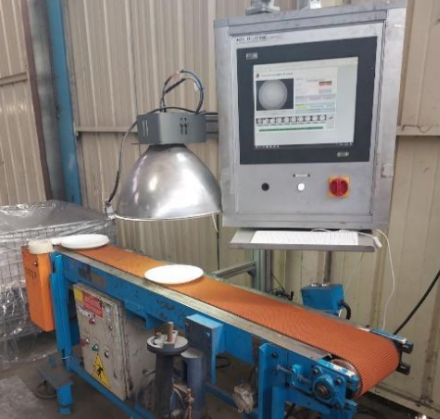
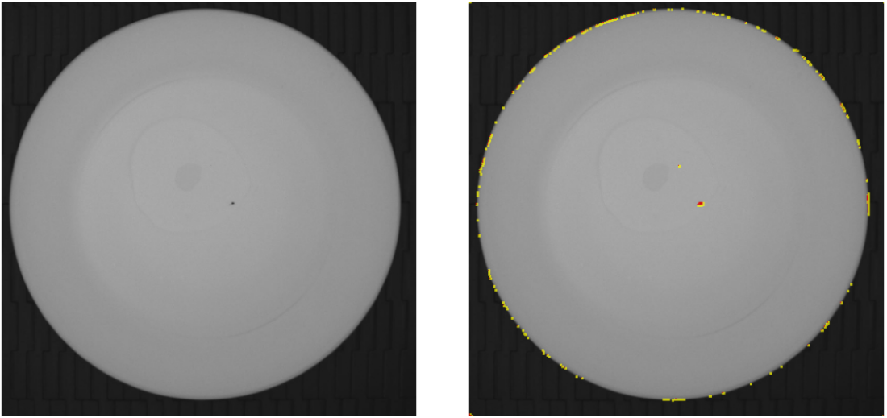
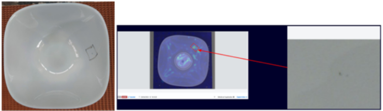

Élève ingénieur en fin de double diplôme d'ingénieur — Polytechnique Montréal / IMT Nord Europe
A propos
Élève ingénieur en fin de double diplôme entre Polytechnique Montréal et IMT Nord Europe, je recherche un stage de fin d'études de 6 mois en France à partir de mai 2026.
Mon parcours a débuté par une formation d'ingénieur généraliste à l'IMT Nord Europe, où j'ai acquis une vision transverse des enjeux technologiques et industriels. Souhaitant approfondir les domaines de la donnée, je me suis orienté vers Polytechnique Montréal pour me spécialiser en Data Science et Intelligence Artificielle. Ce double cursus me permet aujourd'hui d'allier la rigueur d'une approche généraliste à une expertise technique pointue.
J'ai eu l'opportunité de mettre ces compétences en pratique lors de deux stages, ainsi qu'au travers de projets académiques et personnels, que vous pouvez consulter ci-dessous.
Expérience
Stage Data Scientist – Vision industrielle & Deep Learning
Arc
Avril — Août 2024 Détails
▸ Conduite d'une étude de faisabilité pour l'intégration de l'IA sur une ligne de production afin d'améliorer le contrôle qualité
▸ Développement et évaluation de modèles d'IA (supervisés/non supervisés) sur des images acquises par ordinateur industriel
▸ Étude comparative de solutions d'industrialisation de fournisseurs pour choisir celle la plus adaptée aux contraintes de production
Résultat : Approbation du projet par la direction, déclenchant l'acquisition en location d'une unité pilote pour des tests réelssur ligne de production
PythonDeep LearningComputer Vision
Stage Data Scientist – Vision industrielle & Deep Learning
Arc · Avril — Août 2024
Arc est le huitième plus grand site industriel français et un leader mondial des arts de la table, engagé dans le développement et la fabrication de produits en verre, dont le verre coloré teinté dans la masse. Au sein de ce groupe industriel, j’ai mené une étude de faisabilité visant à intégrer une solution d’intelligence artificielle pour le contrôle qualité de nouvelles gammes en verre opale coloré, qui nécessite un manuel puisque les machines actuelles ne sont pas suffisantes.
J’ai assuré la collecte et la structuration des données sur un banc d’essai industriel que j’ai mis en place, en optimisant les paramètres d’acquisition (luminosité, réglages caméras) afin de constituer un jeu de données exploitable pour l’entraînement et l’évaluation des modèles. J’ai d’abord validé la performance d’une approche par réseaux de neurones convolutifs (CNN) en apprentissage supervisé, en démontrant des résultats au moins équivalents aux systèmes de vision classiques.

Banc de test
Face à la diversité croissante des articles et des défauts, j’ai ensuite orienté le projet vers une approche non supervisée basée sur des auto-encodeurs afin de développer un système de détection d’anomalies plus flexible et généralisable, permettant de démontrer la pertinence de la solution et d’obtenir la validation de la direction.

Classification non supervisée par auto-encodeur pour la détection des défauts
En parallèle, j’ai mené une prospection auprès de différents fournisseurs afin de comparer les solutions d’industrialisation les plus adaptées aux contraintes des lignes de production et d’identifier l’architecture technique la plus pertinente, ce qui a conduit au choix d’une solution pilote déployée pour des tests en conditions réelles.

Solution d'industrialisation de l'entreprise retenue
Stage Data Analyst
Vinci – Cegelec Projets Espace & Hydrogène
Mai — Août 2023 Détails
▸ Réalisation d'un POC sur la solution SaaS Teepee pour l'automatisation de processus métiers :
▸ Développement d’un tableau de bord de suivi des candidats, facilitant la visibilité sur le processus de recrutement
▸ Création d’un outil de suivi en temps réel des expéditions vers la Guyane, garantissant la traçabilité complète du matériel
Résultat : Automatisation réussie des processus cibles, marquée par le test de l'outil de recrutement en conditions réelles par l'équipe RH
SQLExcelSaaS
Stage Data Analyst
Vinci – Cegelec Projets Espace & Hydrogène · Mai — Août 2023
Au sein de Cegelec Projets Espace & Hydrogène, j'ai accompagné l'acquisition de la licence SaaS Teepee en pilotant un POC visant à tester le déploiement et à identifier les limites techniques de la solution pour l'automatisation des processus métiers.
J'ai d'abord répondu à la complexité du suivi des candidatures, avec un processus qui implique des validations croisées entre les RH, la Direction Technique et les opérationnels, en développant un tableau de bord centralisé pour avoir un résumé global clair garantissant la conformité RGPD.
Concernant la logistique, j'ai évalué la faisabilité technique du remplacement d'une base Microsoft Access obsolète par un outil de suivi des expéditions vers la Guyane, testant ainsi les limites de la solution SaaS pour assurer une traçabilité complète.
Cette mission a permis de confirmer la viabilité de l'automatisation, aboutissant à une configuration RH prête pour un test en conditions réelles et à une analyse précise des contraintes de migration pour les flux logistiques.
Formation
2024 — 2026
Maîtrise en génie informatique, option ingénierie et analytique des données
Polytechnique Montréal
Double diplôme en partenariat avec IMT Nord Europe : Deep learning, Apprentissage automatique, Vision par ordinateur, NLP, Infonuagique, Fouille de données
Projet réalisé lors du Datathon de l'Université de Montréal en groupe de 3.
NutriSnap permet de scanner le contenu d'un réfrigérateur pour générer instantanément des suggestions de recettes saines. Le système calcule le Nutri-Score et les apports nutritionnels (protéines, sucres, graisses) de chaque plat pour aider l'utilisateur à maintenir une alimentation équilibrée selon ses objectifs personnels.
Détection d'ingrédients par YOLOv11Interface de recommandation de recettes et Nutri-Score
Côté technique, nous avons fine-tuné YOLOv11 sur une base de 30 ingrédients courants pour surpasser les limitations des modèles de zero-shot comme CLIP. Les données sont centralisées dans une base SQLite, permettant de croiser les apports caloriques avec les dépenses sportives récupérées via l'API Garmin.
Assistant IA personnalisé pour le suivi santéRecommandations nutritionnelles personnalisées
Le projet intègre également un chatbot agissant comme un coach de santé. En exploitant l'API OpenAI et les données physiologiques de l'utilisateur (poids, âge, activité physique), l'IA génère des programmes d'entraînement et des conseils nutritionnels sur mesure pour soutenir la motivation à long terme. Ce projet nous a permis , remporté avec le Prix de la meilleure utilisation de l'IA.
Projet de recherche académique réalisé en collaboration avec le Groupe Tera pour corréler événements urbains et qualité de l'air
Objectif : Développer un système de vision par ordinateur sur Raspberry Pi pour détecter le trafic routier et synchroniser ces événements avec les mesures de micro-capteurs de pollution PM2.5
Résultat : Validation d'une méthodologie de fusion de données multi-sources et accueil positif des encadrants pour la pertinence de l'approche en recherche environnementale
PythonYOLOv7DeepSORTRaspberry PiOpenCVPandasAPI Web
Projet entrepreneurial mené en partenariat avec un lycée et une association, visant à accompagner des élèves en bac professionnel dans la création d'une micro-entreprise.
Objectif : Permettre à des lycéens de créer et gérer une micro-entreprise réelle — catalogue, site web, production et vente — pour financer un voyage scolaire.
Résultat : Micro-entreprise créée et opérationnelle, avec réalisation d'un catalogue produit, d'un site web et d'une campagne de vente réussie.